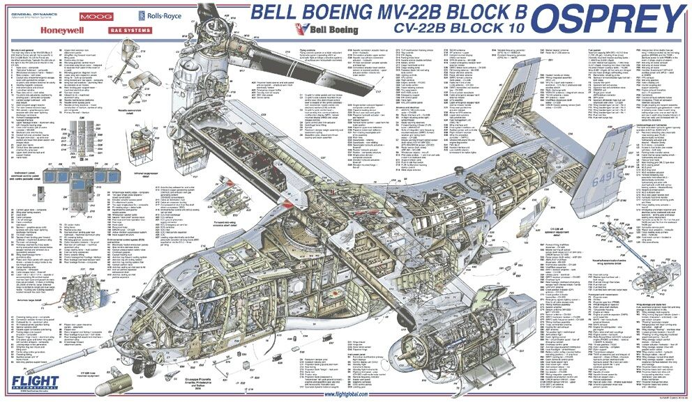

Hello everyone! My name is Munthasir Islam. I work on the V-22 Osprey Aircraft as an avionics Software Engineer for the Boeing Company. I work on planning, designing and testing software solution for the V-22 aircraft. I consider myself to be a resourceful person who is capable of solving problems from different perspectives. I'm also interested in coding projects with an interdisciplinary and educational focus.
I have a V-22 Cutaway poster courtasy of: Flight International Magazine
Enjoy a documentary on V-22 aircraft courtasy of: Business Insider